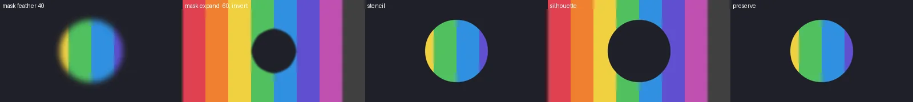
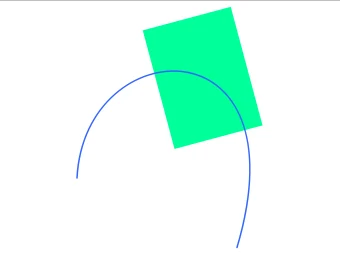
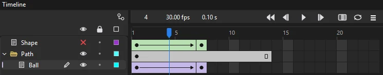

Animation
Masks and guides
Two special kinds of layer change how other layers are drawn: a mask shows the layers beneath it only through its shapes, and a guide holds artwork that helps you work but never appears in the finished animation.
Masks
A mask layer acts like a window. Wherever it has artwork, the layers masked by it show through; everywhere else, they are hidden.
Make a mask
- Put the artwork to be revealed on a layer.
- Add a layer directly above it and draw the window shape on it. Its color doesn't matter.
- Right-click the upper layer and choose Mask. The layer below becomes masked by it, and both are locked so you see the result.
Mask several layers
One mask layer can mask any number of layers. Drag more layers into place directly under the mask layer, among the layers it already masks, or set their type to Masked in Layer Properties; Phoenix tells you if there is no mask layer above to mask them. The masked layers keep their own order, and each can be animated on its own. To free a layer from the mask, set its type back to Normal.
How masks behave
- Only filled areas count: the fills of shapes, and symbol instances and text drawn there. Strokes on a mask layer are ignored, so turn a stroke you want to mask with into a fill first ().
- Transparency in the mask is ignored: a half-transparent fill masks just like a solid one, with a hard edge.
- Masks can be animated; see Animate a mask.
- On the stage, a mask masks only while its layer is locked. Unlock it to see and edit the mask's own artwork, with the layers under it shown whole; lock it again to see the result. Exports always mask.
Animate a mask
A mask layer has its own keyframes, so it can move while what it reveals stays still, or the other way round.
- Move a window: make the mask's shape a symbol and give it a classic or motion tween, for a spotlight that slides across a scene or a porthole that follows a character.
- Grow or change it: give the mask's shape a shape tween, for a wipe, an iris opening or a reveal that spreads.
- Draw it: draw the mask frame by frame for hand-drawn reveals, such as a line being written on.
- Move what shows: animate the masked layers instead, for text sliding into view from behind an edge.
Unlock the mask layer to edit its keyframes on the stage, then lock it again and scrub to check the result. To soften or grow a mask's edge, see the next section. For a complete example, follow the masks lesson.
Soft, grown and inverted masks
Right-click a mask layer and choose Mask Edge... to change how it masks: Feather fades its edge softly over that many pixels, Expand grows it (or shrinks it, below 0) by that many pixels, and Invert shows what is outside the mask instead of inside, for a hole cut in a picture or a vignette. The mask's art keeps its shape; the edge is worked out as it draws, on the stage and in every export. Other apps that open the FLA draw the mask hard-edged and not inverted.
The feather can differ along a mask. Select objects on the mask layer (unlock it first) and open Mask Edge...: Selected objects gives them a feather of their own in place of the layer's, so one mask can be soft round a spotlight and hard along a window frame. Each keyframe keeps its objects' feathers, and a tween blends between them, so an edge can soften or sharpen as the mask moves. Set it back to The layer's to follow the layer again.
Several masks on a layer
A masked layer can be masked by other mask layers of its timeline as well as its own. Right-click it and choose Also Masked By, then a mask layer and how it combines:
- Add shows the layer where either mask is.
- Subtract cuts the layer out where that mask is: a hole through a window.
- Intersect shows the layer only where both masks are.
The order you add them in does not matter: Add masks widen what shows, then Intersect masks limit it, then Subtract masks cut it. Each mask keeps its own edge, feathered or inverted. A mask layer used only this way needs no layers of its own under it; renaming it keeps the layers that use it pointing at it. carries several masks over with movie clips: the layer's art in a clip under its own mask, masked again by each Intersect mask and erased by the Subtract masks inside it, and a layer for each Add mask; their edges are hard there.

Layer modes
A layer's right-click menu has Layer Mode, for working with everything drawn under the layer rather than a single layer below:
- Stencil shows what is under the layer only where the layer has art; the layer's own art is not drawn. A shape on top of a whole scene becomes a window onto it.
- Silhouette is the reverse: it cuts what is under out where the layer has art.
- Preserve Transparency draws the layer only where something is already drawn under it: a texture, a gradient or a light sweep that stays inside the art below.
Guide layers
Right-click a layer and choose Guide to turn it into a guide layer; choose it again to turn it back. Use guide layers for sketches, layout drawings, reference images and notes. They are drawn while you work but left out of every export.
Imported reference video goes onto a locked guide layer automatically, so it is there to animate over but never ends up in your render.
Motion guides
A motion guide moves the objects of a classic tween along a path you draw, instead of in a straight line. Any guide layer becomes a motion guide once a layer is guided by it.
- Make a classic tween of an instance.
- Add a layer above it, right-click it and choose Guide. Draw the path on it as a stroke, with the Pen, Pencil or Line tool.
- Drag the tweened layer onto the guide layer so it becomes guided, or set its type to Guided in Layer Properties. The guided layer is shown indented under its guide.
- At the first and last keyframes, place the instance near where the path should start and end.
The instance now follows the stroke between the keyframes. Check Orient to path in the Frame tab's Tweening section, on the tween's first keyframe, and the instance also turns as the path turns.


How the path is followed
- The object's transformation point rides on the path. Move it with the Free Transform tool to change which part of the object follows the line.
- The object travels from the point on the path nearest where it starts to the point nearest where it ends, so it lands on the path whether or not you placed it exactly. It can stop part way along, or run along the path backward.
- The tween's ease sets the speed along the path.
- Only strokes make the path; fills on the guide layer are ignored. Strokes whose ends meet, within half a pixel, join into one path. If they don't all join, the longest joined line is used and the rest are ignored.
- The path is read from the guide layer's frame under the playhead, so the guide layer can have keyframes of its own and change its path over time.
- Several layers can be guided by the same guide, each following the path with its own tween.
- Only classic tweens follow a motion guide. A motion tween has its own path on the stage, which you bend by dragging.
When the object won't follow the path
- It moves in a straight line
- Check that its layer is indented under the guide layer, that its span is a classic tween rather than a motion tween, and that the path is a stroke rather than a filled shape.
- It follows only part of the path
- The strokes don't meet end to end, so only the longest joined line counts. Zoom in and join the ends, or redraw the path in one go.
- It jumps to the wrong spot
- It goes to the point of the path nearest where you placed it. Move the instance at the first or last keyframe closer to the end of the path you mean.